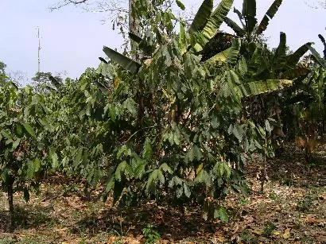
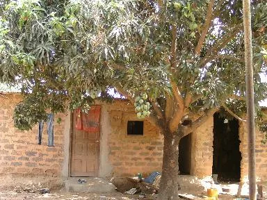
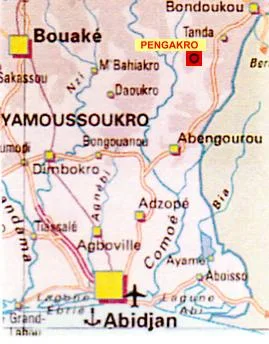

Partenaire principal
La MUDEP
Mutuelle de développement de Pengakro. Elle exprime les besoins des habitants, porte les projets et les gère sur place. Président : Ernest Kouakou Brou (AIP, 2026).
Côte d'Ivoire
Un village d'environ 1 000 habitants dans l'est de la Côte d'Ivoire, entre Tankessé et Agnibilékrou, au cœur d'une région de café et de cacao.
Sources : recensement ivoirien de 2014 (via citypopulation.de), Agence ivoirienne de presse, site du comité.


Le village et ses habitants
Situé à environ 250 km au nord-est d'Abidjan, sous un climat tropical, Pengakro vit principalement de la culture du café et du cacao. Le développement de l'agriculture passe aussi par l'irrigation et le maraîchage.
Dès les années 1970, les villageois ont créé une mutuelle d'entraide et de développement. Aujourd'hui, la Mutuelle de développement de Pengakro (MUDEP) porte les projets du village : elle a notamment construit le premier collège de Pengakro, inauguré le 8 août 2026.
Localisation
Dans l'est de la Côte d'Ivoire, dans la région du Gontougo. Coordonnées indiquées par le comité : 7°19′48″ N, 3°15′41″ O.

Partenaires sur place
Partenaire principal
Mutuelle de développement de Pengakro. Elle exprime les besoins des habitants, porte les projets et les gère sur place. Président : Ernest Kouakou Brou (AIP, 2026).
Chefferie
Nanan Kouassi Kra Rémi, chef du village, cité lors de l'inauguration du collège en août 2026.
Éducation
L'école du village, dont le directeur gère la bibliothèque, et le nouveau collège construit par la MUDEP.
Nouvelles de Pengakro
Adhérer, donner, prêter main-forte lors d'une soirée ou faire connaître le comité : chaque geste compte pour faire vivre ce partenariat entre deux villages.